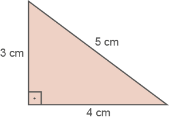
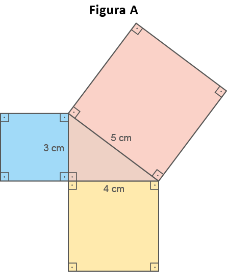
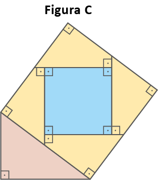
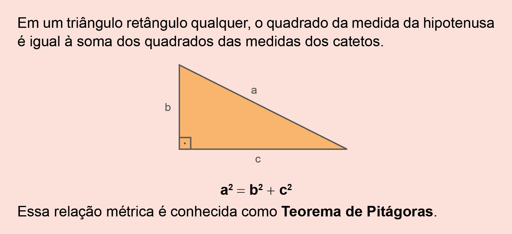
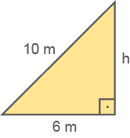
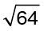
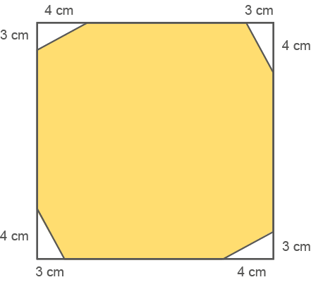
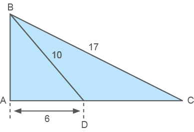
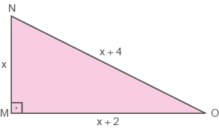
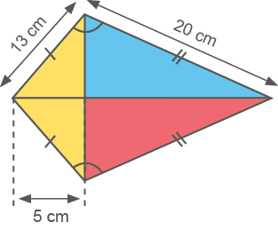

133
Teorema de Pitágoras
Pouco se sabe sobre o matemático Pitágoras. Ao que parece, ele nasceu por volta de 572 a.C., na ilha grega de Samos. Já adulto, em Crotona ‒ uma colônia grega situada no sul da Itália ‒, fundou a famosa escola pitagórica, que, além de ser um centro de filosofia, matemática, música e ciências naturais, era também uma irmandade muito unida.
Acredita-se que Pitágoras morreu com mais de 70 anos de idade. Sua irmandade continuou a existir por pelo menos mais dois séculos, após sua morte.
O Teorema de Pitágoras é considerado uma das principais descobertas da Matemática, ele descreve uma relação existente no triângulo retângulo.
Veremos agora a relação existente entre os lados de um triângulo retângulo cujas medidas são 3 cm, 4 cm e 5 cm por meio da comparação entre áreas.
- Desenhem em uma folha A4, um triângulo retângulo cujos catetos meçam 3 cm e 4 cm, e a hipotenusa 5 cm.

134
- Em seguida, construam três quadrados cujos lados meçam 3 cm, 4 cm e 5 cm, conforme mostra a figura A.

- Marquem o centro do quadrado com a lateral de 4 cm (lembre-se de que, para achar o centro do quadrado, traçamos as suas diagonais). Trace duas retas perpendiculares entre si, ambas passando pelo centro do quadrado, sendo uma delas paralela à hipotenusa do triângulo (figura B). Utilize um jogo de esquadros para auxiliar a traçar a paralela.
![Ilustração de um triângulo retângulo. Em cada um dos catetos e na hipotenusa tem um quadrado encostado, de tamanhos e medidas distintas:
Quadrado menor do cateto de 3cm
Quadrado médio do cateto de 4cm
Quadrado maior da Hipotenusa de 5cm
Do interior do quadrado médio, localizado embaixo, dois seguimentos pontilhados ligam as diagonais. Um sai do canto superior esquerdo e vai até o canto inferior direito, e o outro sai do canto superior direito e vai até o canto inferior esquerdo. Esses seguimento se cruzam e formam um x no interior do quadrado. O cruzamento representa o centro do quadrado. A linha que sai do canto superior esquerdo até o canto inferior direito é paralela à hipotenusa do triângulo retângulo.](../../resources/images/9ANO_U5-web-resources/image/20.png)
135
- Recortem o quadrado com a lateral de 3 cm e as peças que formam o quadrado de 4 cm.
- Feito isso, sobreponham as peças recortadas ao quadrado com a lateral de 5 cm, conforme mostra a figura C.

Agora, registrem no caderno as respostas das questões a seguir:
Agora veremos que a relação encontrada entre as medidas dos lados de um triângulo retângulo específico, 3 cm, 4 cm e 5 cm, vale para qualquer triângulo retângulo. Como há várias maneiras de se demonstrar essa relação, apresentaremos uma delas. Observe:
![Ilustração do triângulo retângulo ABC, com o ângulo reto no vértice A. A hipotenusa é o lado AC, com medida b. O lado AB mede c e o lado BC mede a. Do vértice A e dentro do triângulo, é traçado um seguimento, denominado AH, que vai até a hipotenusa do triângulo ABC. Esse seguimento tem medida h e divide o triângulo retângulo em dois outros triângulos retângulos, denominados ABH e AHC. Em ambos, o ângulo reto está no vértice H. O vértice B, do triângulo ABH tem indicador de ângulo, mas sem indicação de medida. . O lado BH mede n. O lado HC do triângulo AHC, tem medida m. A indicação de ângulo no vértice C, mas sem indicação de medida.](../../resources/images/9ANO_U5-web-resources/image/22.png)
136
Vimos que, para esse tipo de triângulo, valem as seguintes relações:
b2 = a ∙ m
c2 = a ∙ n
Adicionando-as membro a membro, temos:
b2 = a ∙ m
+ c2 = a ∙ n
b2 + c2 = a ∙ m + a ∙ n
Fatorando o 2.º membro, temos:
b2 + c2 = a ∙ (m + n)
Como m + n = a, temos:
b2 + c2 = a ∙ a
b2 + c2 = a2
ou
a2 = b2 + c2

Agora, vejamos uma situação na qual podemos utilizar o Teorema de Pitágoras.
Em um poste foi instalado um transformador. No lado oposto, colocou-se um cabo de 10 metros de comprimento, com a finalidade de manter o poste em equilíbrio. Uma das extremidades do cabo foi fixada no chão, a 6 metros de distância, e a outra, na extremidade do poste, conforme mostra a ilustração.
137
Sabendo-se que o cabo, o poste e o chão formam um triângulo retângulo, qual é a medida da altura (h) do poste?
De acordo com o enunciado, temos as seguintes medidas:

Aplicando o Teorema de Pitágoras, temos:
102 = h2 + 62
100 = h2 + 36
100 - 36 = h2
64 = h2
h2 = 64
h = 
h = 8 m
Logo, o poste tem 8 metros de altura.
Encontre soluções

138


![Ilustração de um quadrado que possui em seu interior um retângulo inclinado para a direita. Os vértices M e P do retângulo tocam o canto inferior esquerdo do quadrado já os vértices N e O tocam o canto superior direito do quadrado, formando dois triângulos retângulos pequenos, cuja medida dos catetos são 3 cm para os dois triângulos. As hipotenusas não possuem indicação de medida e elas fazem margem com as alturas do retângulo. As laterais do retângulo denominadas MN e PO tocam as laterais do quadrado formando dois triângulos retângulos à esquerda e à direita do quadrado. Esses triângulos possuem 7 cm de medida de catetos. As hipotenusas não possuem indicação de medida. Em todos os triângulos retângulos formados, o ângulo reto localiza-se nos cantos do quadrado.](../../resources/images/9ANO_U5-web-resources/image/26.png)
![Ilustração de um bambu no meio do mato. Esse bambu está quebrado na metade e a parte de cima pendeu para baixo à esquerda. A outra metade está fincada no chão. A parte fincada no chão, a parte quebrada e o chão formam um triângulo retângulo, com o ângulo reto localizado na união da base do bambu com o chão. O cateto tem medida x e é representado pelo parte do bambu que está fincada no chão, o outro cateto tem medida 12m, e é formado pela distância no chão que vai da base do bambu até a ponta quebrada caída no chão. A hipotenusa não tem medida indicada e é representada pela parte quebrada do bambu que caiu para a esquerda.](../../resources/images/9ANO_U5-web-resources/image/Mat-9A_U4_06.png)
139

abaixo.



Em seguida, Dona Bete marca os pontos médios de cada lado e desenha um novo triângulo como mostra a figura abaixo.

140
![Uma sequencia de triângulos retângulos. Do ponto O, à esquerda, saem quatro seguimentos distantes entre si e que serão as hipotenusas dos triângulos. O seguimento de baixo é o OA, o cateto do primeiro triângulo. O lado AB é o outro cateto desse triângulo. Ao lado do ponto A, há o pequeno desenho de uma gata preta. BC é o cateto do segundo triângulo e a hipotenusa do primeiro triângulo trona-se o cateto do segundo triângulo. CD é o cateto do terceiro triângulo e a hipotenusa do segundo triângulo trona-se o cateto do terceiro triângulo. Há um seguimento dando a ideia que a sequencias de triângulos continua.](../../resources/images/9ANO_U5-web-resources/image/MAT_9_ano_U4_p_108_Quest_o_OBMEP.png)
Medida da diagonal de um quadrado
Por meio do Teorema de Pitágoras, podemos obter uma relação que nos permite calcular a medida da diagonal de um quadrado.
Vamos considerar o quadrado ABCD, de lado l e diagonal d:

A diagonal AC divide o quadrado em dois triângulos retângulos congruentes.
Aplicando o Teorema de Pitágoras no triângulo retângulo ACD, temos:
d2 = l2 + l2
d2 = 2 l2
d = √2l2
d = l√2
141
A medida da diagonal (d) de um quadrado é dada por: d = l√2
Note que precisamos encontrar um número que elevado ao quadrado resulte em 2. Isso significa que a medida do comprimento da diagonal do quadrado não pode ser expressa por um número racional, tomando a medida de comprimento do lado do quadrado (l) como unidade de medida. Sua representação decimal possui infinitas casas decimais que não se repetem de modo periódico, ou seja, não é uma dízima periódica.
O valor aproximado para √2 é 1,4142135623730950488016887242097.
Medida da altura de um triângulo equilátero
Por meio do Teorema de Pitágoras também é possível encontrar uma relação que nos permite calcular a medida da altura de um triângulo equilátero.
Vamos considerar o triângulo equilátero ABC, de lado l e altura h.
![Dois triângulos. O primeiro é um triângulo equilátero rosa ABC. O vértice A está acima e ao centro. O lado BC é a base do triângulo, sendo B à esquerda, C à direita. Os três lados do triângulo estão nomeados com a letra l minúscula e cursiva. Um seguimento liga o vértice A ao centro da base, nomeado com a letra H maiúscula e formando um ângulo reto. O seguimento é nomeado com a letra h minúscula, representando a altura. O segundo triângulo é retângulo, nomeado de ACH. Ele é a metade do triângulo anterior. O ângulo reto está localizado no canto inferior esquerdo da figura, formado pela união dos vértices AH. Entre os vértices AH a letra h minúscula representando a altura. Entre os vértices AC, a letra l em minúscula e cursiva representando o lado. E entre os vértices HC, a base do triângulo reto, a letra l sobre 2.](../../resources/images/9ANO_U5-web-resources/image/31.png)
A altura AH divide o triângulo equilátero em dois triângulos retângulos congruentes.
Aplicando o Teorema de Pitágoras no triângulo retângulo ACH, temos:
A medida da altura (h) de um triângulo equilátero é dada por:
Note que √3 também é um número irracional.
142
Encontre soluções
a)


(Considere √2 = 1,41)
(Considere √3 = 1,73)
143
Probabilidade e estatística
- Juros simples ou compostos
No ano anterior, vimos a seguinte situação:
Gabriel foi ao banco solicitar um empréstimo. Antes, ele havia feito algumas simulações on-line para negociar com o seu gerente quando chegasse ao banco. Em uma dessas simulações ele emprestaria R$ 5.000,00 com uma taxa de juros de 5% ao mês. Quanto de juros ele pagaria no primeiro mês?
5% de 5000,00 é
5000 X
Assim, a taxa de juros mensal é de 250 reais.
Se ele pagar em 10 vezes, considerando a taxa de juros simples, qual será o montante final a ser pago?
Como são 10 meses, o juros a ser pago seria de 10 × 250 = 2500. Adicionado ao valor do empréstimo, temos: 5000 + 2500 = 7500.
Ou seja, o valor a ser pago será de R$ 7.000,00
Para este cálculo foi considerado o juros simples e foi utilizado a seguinte fórmula de matemática financeira:
M = C x i × t
Na qual:
- M = Montante (valor final);
- C = capital inicial;
- i = taxa de juros;
- t = tempo da aplicação.
Em muitos casos, o juros aplicado não é juros simples e sim, juros composto. Vamos exemplificar com o seguinte quadro:
|
Mês |
Montante |
Juros no mês |
Juros acumulados |
|
0 |
R$ 5.000,00 |
R$ - |
0 |
|
1 |
R$ 5.250,00 |
R$ 250,00 |
R$ 250,00 |
|
2 |
R$ 5.512,50 |
R$ 262,50 |
R$ 512,50 |
|
3 |
R$ 5.788,13 |
R$ 275,63 |
R$ 788,13 |
|
4 |
R$ 6.077,53 |
R$ 289,41 |
R$ 1.077,53 |
|
5 |
R$ 6.381,41 |
R$ 303,88 |
R$ 1.381,41 |
|
6 |
R$ 6.700,48 |
R$ 319,07 |
R$ 1.700,48 |
|
7 |
R$ 7.035,50 |
R$ 335,02 |
R$ 2.035,50 |
|
8 |
R$ 7.387,28 |
R$ 351,78 |
R$ 2.387,28 |
|
9 |
R$ 7.756,64 |
R$ 369,36 |
R$ 2.756,64 |
|
10 |
R$ 8.144,47 |
R$ 387,83 |
R$ 3.144,47 |
144
Observe que ao final do período o valor do juros é maior, pois nessa modalidade de correção, os juros cobrados sobre uma dívida passam a incidir também sobre o valor dos juros acrescidos e não somente sobre o capital inicial. A fórmula que podemos utilizar para se chegar a essa resposta é:
M = C× (1 + i)t
Substituindo os dados da situação, temos:
M = 5000 × (1 + 0,05)10 = 5000 × 1,0510 = 5000 × 1,0510 ≈ 8144,47.
Assim, ao final de 10 meses, ele pagará R$ 8.144,47.
Vamos fazer o quadro que apresentamos com o auxílio do software LibreOffice.
![Print do programa LibreOffice com quatro colunas ABCD e12 linhas. Linha 1: mês; montante; Juros no mês; Juros acumulados. Linha 2: zero; cinco mil reais; espaço em branco; zero. Linha 3: 1; os outros espaços em branco. Linha 3: 1; os outros espaços em branco. Linha 4: 2; os outros espaços em branco. Linha 5: 3; os outros espaços em branco. Linha 6: 4; os outros espaços em branco. Linha 7: 5; os outros espaços em branco. Linha 8: 6; os outros espaços em branco. Linha 9: 7; os outros espaços em branco. Linha 10: 8; os outros espaços em branco. Linha 11: 9; os outros espaços em branco. Linha 12: 10; os outros espaços em branco.](../../resources/images/9ANO_U5-web-resources/image/UNI5_Libre-01.png)
Obtemos o seguinte resultado:
![Print do programa LibreOffice com quatro colunas ABCD e12 linhas. Linha 1: Mês; Montante; Juros no mês; Juros acumulados.Linha 2: zero; 5 mil reais; R$; zero.Linha 3: 1; cinco mil e duzentos e cinquenta reais; duzentos e cinquenta reais; duzentos e cinquenta reais.Linha 4: 2; cinco mil quinhentos e doze reais e cinquenta centavos; duzentos e sessenta e dois reais e cinquenta centavos; quinhentos e doze reais e cinquenta centavos.Linha 5: 3; cinco mil setecentos e oitenta e oito reais e treze centavos; duzentos e setenta e cinco reais e sessenta e três centavos; setecentos e oitenta e oito reais e treze centavos.Linha 6: 4; seis mil e setenta e sete reais e cinquenta e três centavos; duzentos e oitenta e nove reais e quarenta e um centavos; mil e setenta e sete reais e cinquenta e três centavos.Linha 7: 5; seis mil trezentos e oitenta e um reais e quarenta e um centavos; trezentos e três reais e oitenta e oito centavos; mil trezentos e oitenta e um reais e quarenta e um centavos.Linha 8: 6; seis mil setecentos reais e quarento e oito centavos; trezentos e dezenove reais e sete centavos; mil setecentos reais e quarenta e oito centavos.Linha 9: 7; sete mil e trinta e cinco reais e cinquenta centavos; trezentos e trinta e cinco reais e dois centavos; dois mil e trinta e cinco reais e cinquenta centavos.Linha 10: 8; sete mil trezentos e oitenta e sete reais e vinte e oito centavos; trezentos e cinquenta e um reais e setenta e oito centavos; dois mil trezentos e oitenta e sete reais e vinte e oito centavos.Linha 11: 9; sete mil setecentos e cinquenta e seis reais e sessenta e quatro centavos; trezentos e sessenta e nove reais e trinta e seis centavos; dois mil setecentos e cinquenta e seis reais e sessenta e quatro centavos.Linha 12: 10; oito mil cento e quarenta e quatro reais e quarenta e sete centavos; trezentos e oitenta e sete reais e oitenta e três centavos; três mil cento e quarenta e quatro reais e quarenta e sete centavos.](../../resources/images/9ANO_U5-web-resources/image/UNI5_Libre-02.png)
145
Relembre
![Ilustração de uma escada laranja com cinco degraus. Cada degrau com 24 centímetros. Acima dos degraus, um corrimão. A altura antes do primeiro degrau e o corrimão é de 90 centímetros. Também mede 90 centímetros a altura, após último degrau e o corrimão. O comprimento do corrimão está dividido em três partes. Na primeira, antes do primeiro degrau, ele está em linha reta e mede 30 centímetros. A segunda parte, ele está em diagonal sendo a hipotenusa de um triangulo formado com a largura dos cinco degraus. A terceira parte, depois do último degrau, ele está em linha reta e mede 30 centímetros.](../../resources/images/9ANO_U5-web-resources/image/34.png)
Na figura anterior, que representa o projeto de uma escada com 5 degraus de mesma altura, o comprimento total do corrimão é igual a:
![Um triângulo retângulo ABC azul. O vértice A está acima e mais à esquerda, a partir do centro. Ele tem o ângulo interno reto. O vértice B está à esquerda e forma a base do triângulo com o vértice C à direita. Um seguimento pontilhado liga o vértice A ao centro da base, nomeado com a letra H maiúscula e formando um ângulo reto. O seguimento é nomeado com a letra h minúscula, representando a altura. O lado BC é nomeado pela letra a minúscula. O lado AC pela letra b minúscula. O lado AB pela letra c minúscula. Na base do triângulo, entre BH é nomeado com a letra n minúscula; e entre HC com a letra m minúscula.](../../resources/images/9ANO_U5-web-resources/image/35.png)
Sabendo que esta via divide o contorno maior do gramado em dois pedaços, um de 32 m e outro de 18 m, o contorno b mede, em metros:
146


![Ilustração de uma estrada em linha reta formando a base de um triângulo retângulo. O ângulo reto está localizado no canto superior esquerdo da figura, formado pela junção da estrada na horizontal e a linha vertical representando 9 quilômetros até a ponta do vértice nominada de Casa central. Uma linha na diagonal liga a Casa central à Casa do filho, localizada na estrada e representando a distância de 15 quilômetros. Uma outra linha na diagonal, entre o ângulo reto e a Caso do filho liga a Casa Central ao Escritório.](../../resources/images/9ANO_U5-web-resources/image/39.png)
A distância comum deverá ser:
147
![Um triângulo retângulo ABC laranja. O vértice B está na parte de cima à esquerda. O ângulo reto está localizado no canto inferior esquerdo, no vértice A. AC é a base do triângulo e BC a hipotenusa. No interior do triângulo, nove figuras geométricas, divididas em três linhas. Linha 1: um triângulo retângulo, sendo a base a medida do lado de dois quadrados. Linha 2: dois quadrados e um triângulo retângulo. Linha 3: quatro quadrados e um triângulo retângulo. Cada lado do quadrado mede 2 centímetros.](../../resources/images/9ANO_U5-web-resources/image/40.png)
![Dois triângulos retângulos unidos pela base do triângulo de cima e a hipotenusa do triângulo debaixo. O triângulo ABC é menor e está na parte debaixo da figura. No vértice B está o ângulo reto localizado no canto inferior direito da figura, formado pela junção dos dois catetos. O cateto maior está na horizontal e faz a base CB, sendo C à esquerda e B à direita. O cateto menor está na vertical e une os vértices AB. A hipotenusa CA do triângulo menor é a base do triângulo retângulo maior DCA. No vértice C está o ângulo reto localizado no canto inferior esquerdo, formado pela junção dos dois catetos.](../../resources/images/9ANO_U5-web-resources/image/UN5_PAG149_Q15.png)